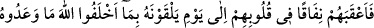
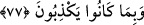
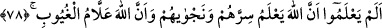

edilmemesi, daha önce söylediğin “Bu bir cizyedir.” sözünün cezasıdır. Sana (zekatını
vermeni) emrettim fakat sen bana itaat etmedin.
Rasûlullah (a.s.)’ın irtihalinden sonra zekatını Hz. Ebû Bekir’e (r.a.) getirmiş Hz. Ebû
Bekir kabul etmemiş, sonra hilafeti döneminde Hz. Ömer’e (r.a.), getirmiş o da kabul
etmemiş ve nihayet Osmân’ın (r.a.) hilâfeti döneminde helak olmuştur. Haddâdî, onun
zekatını Hz. Osmân’ın da kabul etmediğini söyler.
77. Kendisine verdikleri sözden döndüklerinden ve yalan söylediklerinden dolayı
Allah, kendisi ile karşılaşacakları güne kadar onların kalplerine ikiyüzlülük
sokmuştur.
Zekatı vereceklerine ve yararlı iş yapacaklarına dair “kendisine verdikleri sözden
döndüklerinden ve” yukarıda bahsedilen vaadleri de dahil bütün sözlerinde “yalan
söylediklerinden dolayı” yalan söylemeyi sürdürüyor olmaları sebebiyle, “Allah,
kendisi ile” huzurunda “karşılaşacakları güne” yani ölüm günlerine “kadar” Allah
“onların kalplerine ikiyüzlülük sokmuştur.” Yani bu fiillerinin sonucunu onların
kalplerine yerleşmiş münâfıklık ve kötü itikad yapmıştır. Onların bu fiillerinin
neticesinde Allah, onların kalplerine sâbitleşmiş “nifak” ve kötü itikad yerleştirmiştir.
Mesela:
“Kendisi ile karşılaşacakları güne kadar” ifadesi, onların ikiyüzlülüklerini te’yid
etmekte, cimrilik ve Allah Teâlâ’nın kendisine verdiği maldan Allah’ın hakkını
vermeme hastalığının onun münâfık olarak ölmesine sebep olacağına delâlet etmektedir.
Böyle bir münâfık için ebediyyen İslâm hükmü kabul edilmez. Bu duruma düşmekten
Allah’a sığınırız. İblis de Allah’ın bir emrini terk etti de Allah onu kapısından kovdu.
Halbuki o seksen bin sene yüzünü ona ibadete vermişti. Allah onu kıyamet gününe kadar
lânetlemiş, âhirette de ona hiç sonu gelmeyecek acıklı bir azap hazırlamıştır.
Hâfız der ki:
Zâhid! İbadetinle gururlanma, mahbub kibirli âşığı beğenmez
Çünkü ibadet yurduyla kilise arasındaki yol çok değildir
78. Allah’ın, onların sırlarını da fısıltılarını da bilip durduğunu ve bütün
bilinmeyenleri bildiğini hâlâ bilmediler mi?